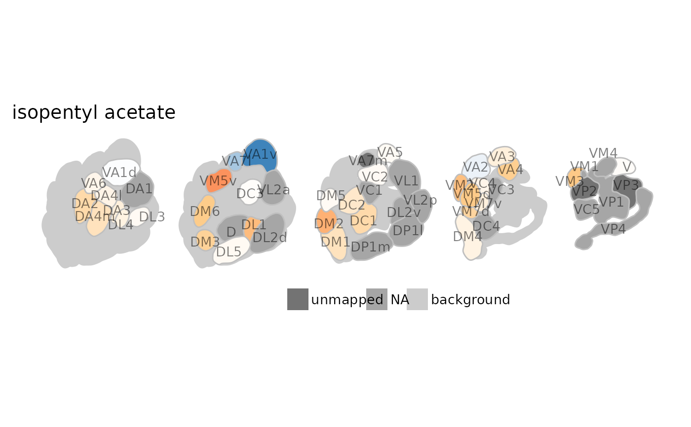
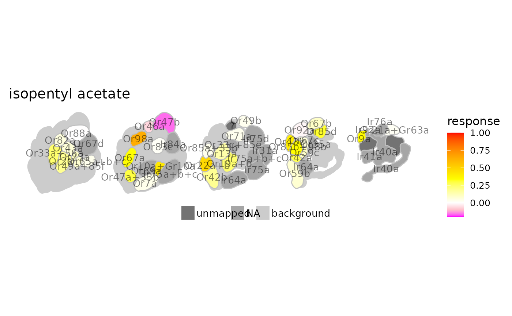
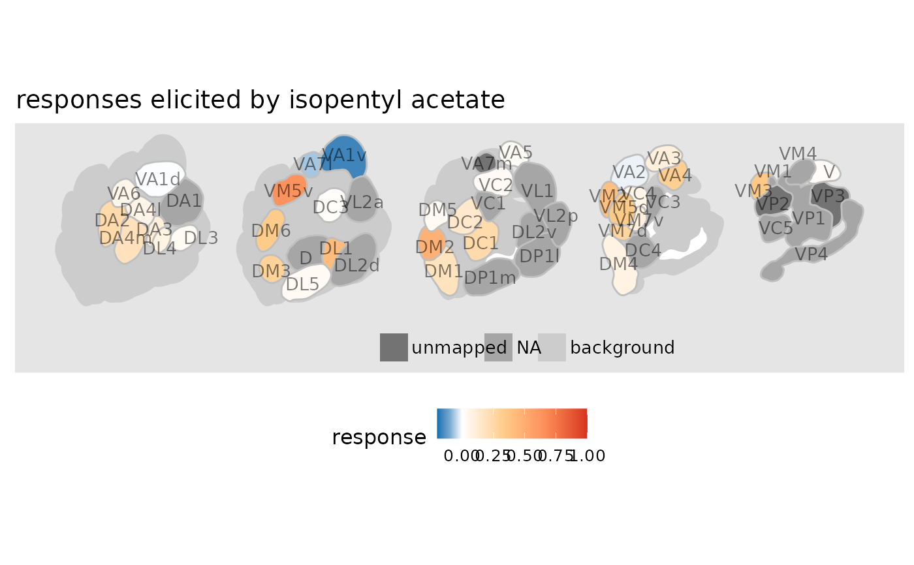

Plot an antennal lobe map with color coded odorant responses.
Usage
dplot_al_map(InChIKey,
response_matrix = door_default_values("door_response_matrix"),
odor_data = door_default_values("odor"),
door_mappings = door_default_values("door_mappings"),
zero = door_default_values("zero"),
tag = door_default_values("tag.ALmap"), main = "Name",
scalebar = door_default_values("scalebar"),
door_AL_map = door_default_values("door_AL_map"),
colors = door_default_values("colors"), legend = TRUE, limits,
base_size = 12)Arguments
- InChIKey
InChIKey specifying the odorant to plot
- response_matrix
the input data (e.g. door_response_matrix or door_response_matrix_non_normalized)
- odor_data
data frame, contains the odorant information.
- door_mappings
the data frame containing the mapping information
- zero
the odorant to set to zero (defaults to "SFR")
- tag
the labels to plot on top of the glomeruli (one of the following
door_mappingscolumns: "receptor", "sensillum", "ORN", "glomerulus" or "co.receptor")- main
the title, one column of
odor, defaults to "Name"- scalebar
whether or not to add a scalebar
- door_AL_map
a list containing the AL model
- colors
a vector containing 6 color values (2 for values below 0, 1 0 value and 3 steps between 0 and 1)
- legend
logical, plot a legend?
- limits
the limits for the color scale, if empty the range of the response matrix is taken (after setting ``zero`` to 0)
- base_size
numeric, the base font size for the ggplot plot
Details
Normalized, color coded odor responses across receptors are mapped onto a map of the Drosophila antennal lobe. The antennal lobe map was a kind gift from Veit Grabe.
References
Grabe, V., Strutz, A., Baschwitz, A., Hansson, B.S., Sachse, S., 2014. A digital in vivo 3D atlas of the antennal lobe of Drosophila melanogaster. J. Comp. Neurol. n/a–n/a. doi:10.1002/cne.23697
See also
get_normalized_responses, ggplot2, grid
Examples
# load data
library(DoOR.data)
library(DoOR.functions)
# map responses on antennal lobe scheme
dplot_al_map("MLFHJEHSLIIPHL-UHFFFAOYSA-N", scalebar = FALSE)

# change colors
dplot_al_map("MLFHJEHSLIIPHL-UHFFFAOYSA-N", tag = "Ors",
color = c("magenta", "pink", "white", "yellow", "orange", "red"))
#> Warning: Removed 2 rows containing missing values or values outside the scale range
#> (`geom_text()`).

# pass some ggplot2 theming parameters
dplot_al_map(trans_id("123-92-2"), scalebar = FALSE) +
ggplot2::theme(legend.position = "bottom",
panel.background = ggplot2::element_rect(fill = "grey90", color = NA)) +
ggplot2::ggtitle("responses elicited by isopentyl acetate")

# export as pdf
if (FALSE) {
p <- dplot_al_map(trans_id("123-92-2"))
ggplot2::ggsave("AL.response.pdf", p, width = 6, height = 2, scale = 2)
}